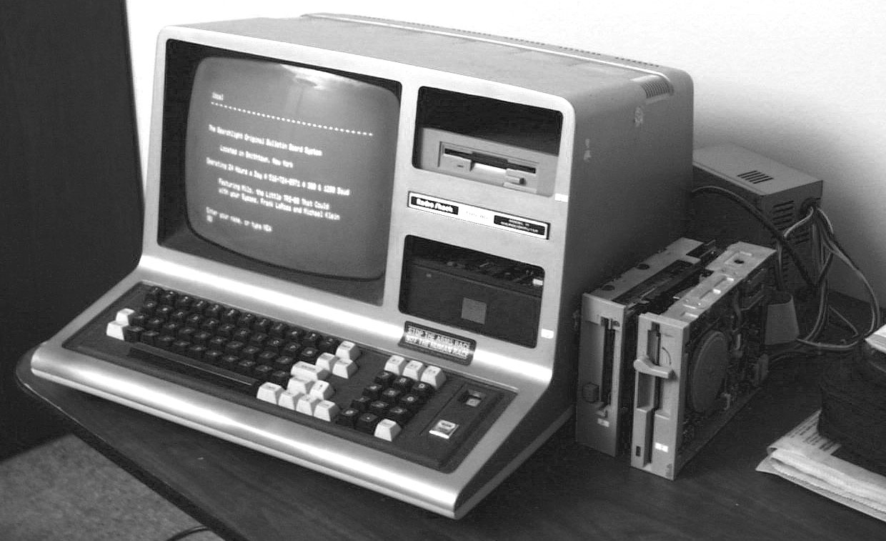

Komputer yang Anda gunakan hari ini untuk menjelajahi internet, bekerja, atau membangun sebuah website tidak lahir begitu saja. Jauh sebelum era prosesor mikro yang super tipis dan komputasi awan (*cloud computing*), komputer mengawali jalannya dari sebuah konsep yang sangat sederhana: alat hitung mekanis untuk mempermudah matematika dasar manusia.
Dari Abakus Menuju Mesin Analitikal Charles Babbage
Ribuan tahun lalu, manusia mengandalkan abakus (sempoa) sebagai alat bantu hitung. Namun, lompatan besar sejarah teknologi dimulai pada abad ke-19 ketika Charles Babbage merancang *Analytical Engine*. Meskipun sepenuhnya mekanis dan menggunakan roda gigi, mesin ini memuat prinsip dasar komputer modern: adanya bagian input, prosesor (mill), memori (store), dan output.
Era Transistor dan Kelahiran Ekosistem Internet
Penemuan transistor pada pertengahan abad ke-20 mengubah segalanya. Komputer yang awalnya berukuran sebesar ruangan penuh dan mengonsumsi daya listrik raksasa (seperti ENIAC), menyusut drastis menjadi sirkuit terpadu (microchip). Revolusi perangkat keras inilah yang membuka jalan bagi komputer pribadi (PC) di tahun 1980-an, disusul lahirnya World Wide Web (WWW) yang mengubah fungsi komputer dari alat hitung murni menjadi alat komunikasi global.
"Komputer bukan lagi sekadar alat fisik yang ada di atas meja kita, melainkan infrastruktur tak kasat mata yang melayang di jaringan cloud global."
Hari Ini: Selamat Datang di Era Cloud Computing
Kini, evolusi tersebut telah mencapai puncaknya di **Era Cloud**. Kita tidak perlu lagi memiliki superkomputer fisik di rumah untuk menjalankan komputasi berat. Semua data, aplikasi, dan sistem *backend* website modern disimpan di pusat data terdistribusi yang bisa diakses secara instan dari mana saja. Cara kerja inilah yang membentuk ekosistem web modern saat ini: fleksibel, cepat, dan tanpa batas.
Catatan dari CoDEVIL
Memahami sejarah teknologi membantu kami di CoDEVIL menyadari bahwa masa depan web terletak pada efisiensi integrasi cloud. Itulah mengapa setiap sistem yang kami bangun dioptimalkan untuk arsitektur cloud modern—memastikan website bisnis Anda tidak hanya cepat diakses hari ini, tapi juga siap menghadapi skalabilitas teknologi masa depan.